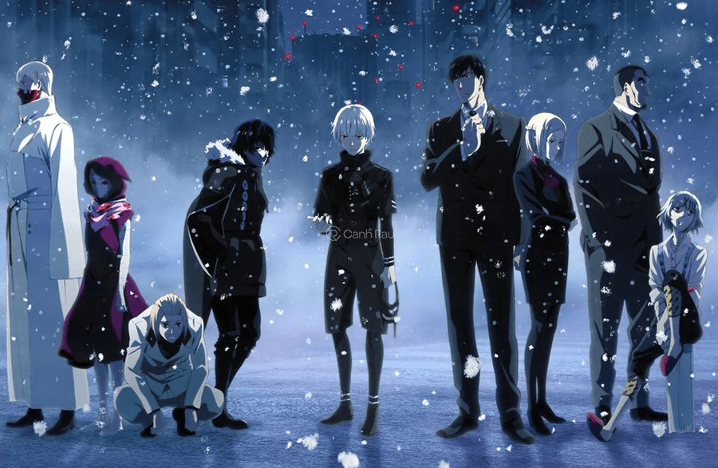
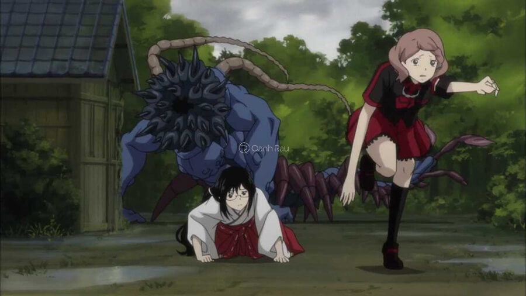
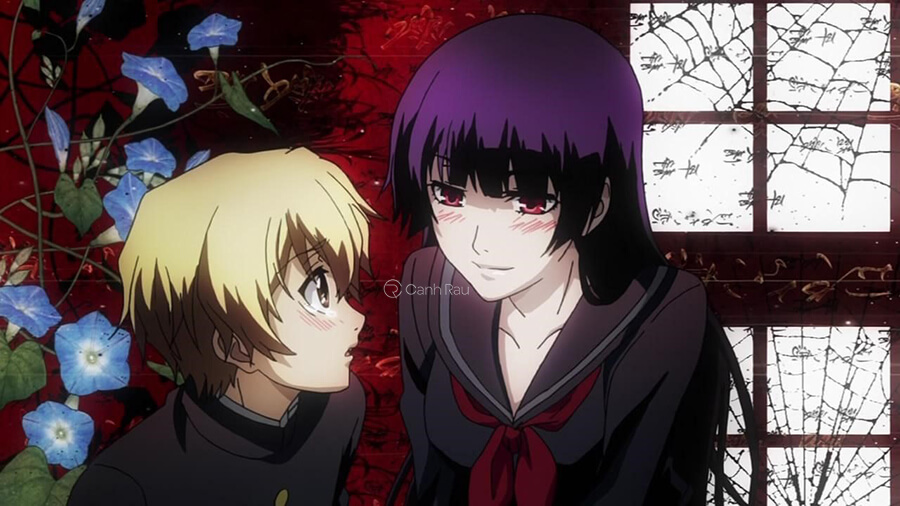
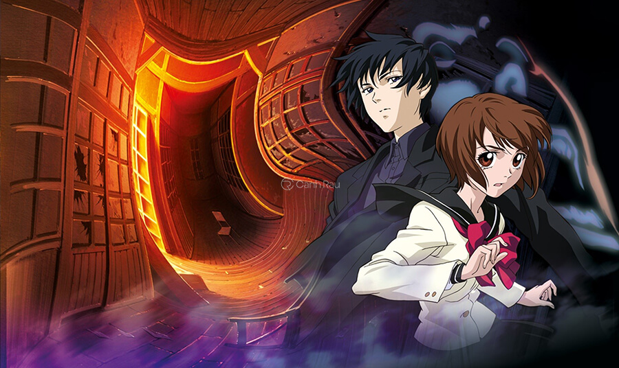
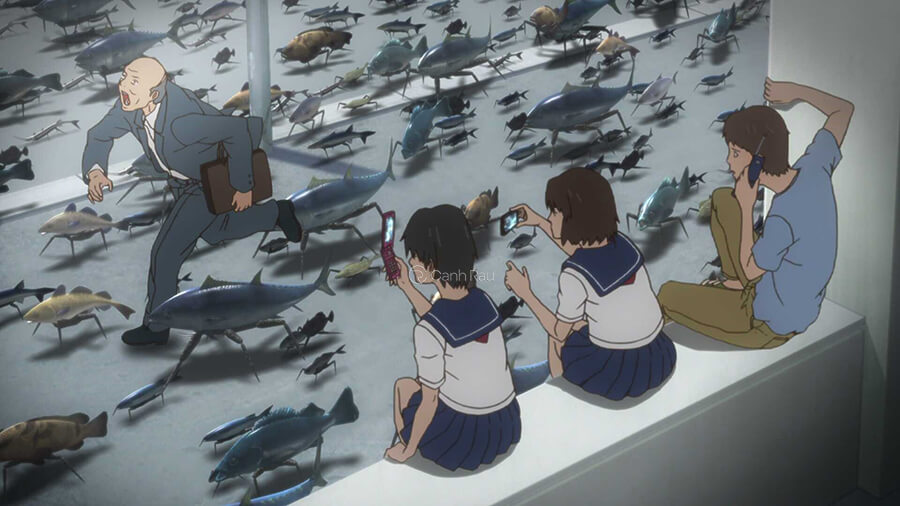
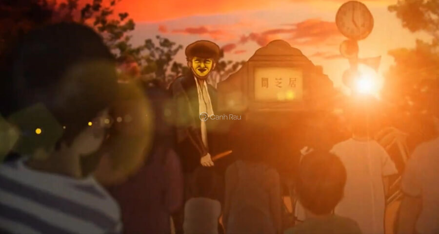
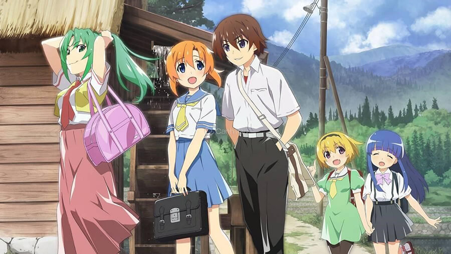
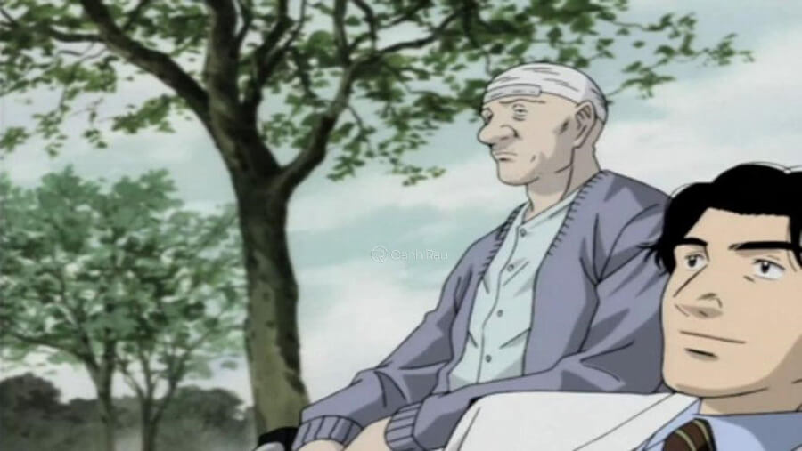
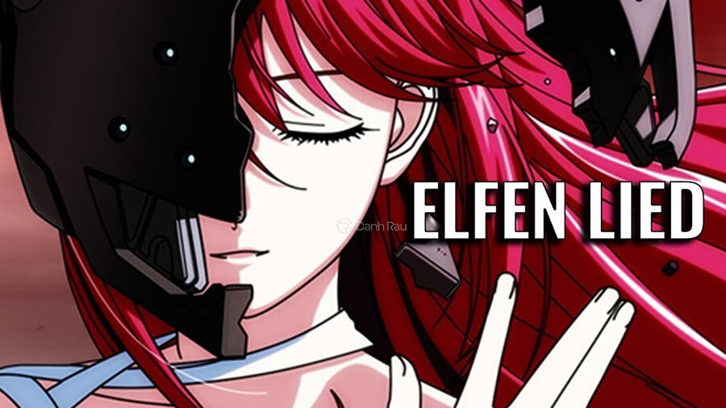

-Ở một thế giới nơi mà con người không còn là kẻ đứng đầu, đã xuất hiện loài có hình dáng giống chúng ta và phát triển thêm nhiều kỹ năng đặc biệt. Những kỹ năng này khiến chúng đi săn loài người. Không cam lòng trước nghịch cảnh, một uỷ ban do loài người lập ra để chống Ghoul xuất hiện.

Hành trình chống lại lũ quỷ Ghoul
-Nhân vật chính của bộ phim anime kinh dị này chính là Kaneki Ken – anh là một người ham học, hiền hậu, và hiện đang là sinh viên. Ken bị cấy một nội tạng từ kẻ Ghoul đã mất. Anh đã sống với thân phận một nửa người, một nửa Ghoul. Từ đây, Ken phải học cách sống với loài Ghoul, cũng đồng thời tìm cách che giấu thân phận thật của mình.
-Tại một vùng thôn quê nhỏ, Saya Kisaragi đang làm việc ở một ngôi đền. Saya đang là thợ săn những quái vật Elder Bairns chuyên hút máu người. Hằng đêm, cô đều cùng cha của mình đi săn chúng, tạo nên sự yên bình cho mọi người trong làng.

-Thế nhưng, lũ quỷ này bắt đầu xuất hiện cả vào ban ngày. Khi chiến đấu với chúng, Saya đã biết được những bí ẩn khủng khiếp đằng sau ngôi làng, cũng như sự thật về bản thân. Sự việc gì sẽ xảy ra và Saya phải làm gì để cứu những người dân quanh đây? Cùng đón xem bộ phim anime kinh dị hấp dẫn này để biết câu trả lời nhé.
-Xác Chết Trường Học là bộ phim anime kinh dị xuất sắc kể về một cuộc hành trình thoát khỏi cái chết của các học sinh và y tá của ngôi trường cấp 2 Fujimi. Cuộc sống vốn dĩ đang bình yên lại bị những con vi rút xuất hiện, chúng có thể biến loài người thành những cái xác sống.
Top những phim anime kinh dị đáng được xem nhất
-Cuộc sống trở nên loạn lạc, loài người phải tìm cách trốn đi để sống sót. Nhưng chuyện đó chắc chắn sẽ rất khó khăn với nhóm. Đối diện với lũ xác sống, lòng tin và tình người cũng khó trụ vững. Liệu cả nhóm Fujimi có an toàn vượt qua lũ xác sống đó không?
-Kanoe Yuuko là một hồn ma đang bị kẹt lại cùng với loài người. Cô cũng quen biệt với nam sinh Niiya Teiichi tại trường học mà cô đang trốn. Dù chỉ là một hồn ma nhưng Kanoe Yuuko có thể giao tiếp được với loài người. Teiichi là một số ít người có thể nói chuyện được với cô.

Tình cảm khác biệt giữa ma và người
-Yuuko không có ký ức về cái chết của mình nên Teiichi đã giúp cô tìm lại ký ức về cái chết cũng như thân phận của cô. Sự tiếp xúc đã khiến cả hai nảy sinh tình cảm. Tình cảm giữa người và ma sẽ đi về đâu? Cùng giải đáp bí ẩn trong bộ phim anime kinh dị này nhé.
-Cô nữ sinh Mai Taniyama có một khả năng đặc biệt đó là về vấn đề tâm linh. Với Mai, cô rất thích việc nghe và kể chuyện ma để giải trí sau giờ học. Cô đã gặp Kazuya Shibuya, cậu là một người điều tra sự mờ ám ở ngôi trường được Shibuya Psychic Research gửi tới.

Khả năng tâm linh đặc biệt của Mai
-Sau một sự cố, Mai đã được mời là trợ lý của cậu. Từ đây, cô đã cùng Kazuya điều tra những hồn ma ở ngôi trường trung học này. Với khả năng đặc biệt của mình, Mai đã giúp đỡ được rất nhiều cho Kazuya, giúp anh thành công phá các vấn đề bí ẩn.
-Cặp đôi Tadashi và Kaori trong chuyến du lịch cùng nhau đã chứng kiến cảnh những sinh vật dưới biển có thể đi đứng như con người nhưng toàn thân lại tỏa ra một mùi thối khủng khiếp. Chúng liên tiếp tấn công loài người. Người nào bị nó cắn được sẽ trở nên thối giống chúng.

Cách nào để tiêu diệt loài cá hôi thối kia?
-Kaori đã không may mắn và bị nó cắn trúng nhưng đã được bác sĩ là Koyanagi giúp cứu chữa. Nhưng sau đó vị bác sĩ này cũng bị nhiễm vi-rút và còn tấn công Tadashi. Lúc này, Tadashi phải nghĩ cách để chữa cho mình và Kaori khỏi bệnh, tiêu diệt loài sinh vật đáng sợ này.
-Ai đam mê thể loại phim anime kinh dị chắc chắn không nên bỏ lỡ bộ Ám Kịch 5. Bộ phim dựa trên những câu chuyện thần thoại về ma quỷ ở xứ sở hoa anh đào. Các nhân vật được xây dựng theo nghệ thuật cắt giấy, khiến cho bộ phim càng trở nên ma mị hơn.

Top bộ phim anime kinh dị rùng rợn nhất chỉ dành cho người lớn
-Mỗi một tập phim sẽ kể về một câu chuyện kinh dị khác nhau. Sự cổ xưa của bộ Ám Kịch 5 tạo nên sự rùng rợn cho người xem, cùng với đó cũng lồng ghép những triết lý của cuộc sống. Bộ phim đưa mọi người trở về thời Showa, ở những ngôi nhà với chi tiết rợn tóc gáy người xem.
-Năm 1983, cậu học sinh Maebara Keiichi đang vui vẻ tận hưởng một cuộc sống yên bình khi chuyển đến ngôi làng Hinamizawa xa xôi cùng bốn người bạn của mình. Cuộc sống có lẽ sẽ yên bình cho đến khi Keiichi phát hiện ra những bí mật của ngôi làng.

Tiếng ve sầu báo hiệu những bí ẩn thảm khốc tại ngôi làng Hinamizawa
-Tại làng Hinamizawa đã từng có một vụ thảm sát đẫm máu. Keiichi cũng đang nghi ngờ sự liên quan giữa những người bạn của mình với vụ án. Mọi chuyện kinh dị bắt đầu từ đây, khi mà Keiichi khám phá ra những bí ẩn của ngôi làng.
-Kenzou Tenma là một vị tiến sĩ, bác sĩ thiên tài về chuyên ngành phẫu thuật não. Ông là người gốc Nhật Bản nhưng sự nghiệp của ông lại thăng hoa tại châu Âu. Khi sự nghiệp tiếp đà thăng tiến, Tenma cũng có một vị hôn thê hoàn mỹ, mọi chuyện tốt đẹp cho tới một ngày nọ.

Cuộc sống đảo lộn của vị tiến sĩ thành công Kenzou Tenma
-Tất cả sự yên bình thay đổi khi mà Tenma chọn cứu một đứa trẻ thay vì cứu người thị trưởng. Hàng loạt vụ giết người xảy ra quanh nơi Tenma sinh sống. Và bằng chứng của những vụ án này thì đang hướng và đứa trẻ được anh cứu sống. Kenzou Tenma quyết tâm tìm kiếm bí ẩn vụ án để rửa nỗi oan cho bệnh nhân của mình, cũng như những vấn đề liên quan đến anh.
-Loại người 2 sừng, hay còn gọi là chủng Diclonius được hình thành qua sự đột biến của gen, tạo ra bước ngoặt của lịch sử. Người Diclonius có những khả năng đặc biệt. Thế nhưng chúng lại sử dụng năng lực ấy để tiêu diệt loài người.

Một chuyện tình bi thảm đẫm máu của nữ Diclonius
-Lo lắng đã khiến một số người đã đưa Diclonius vào trung tâm bí mật để nghiên cứu. Nhưng một tai nạn ập đến khiến một nữ Diclonius thoát ra. Sau đó, cô bị trúng một phát đạn và mất trí nhớ. Khi rơi xuống biển, cô đã trôi về Yuigahama. Tại đây, cô đã gặp được Kohta cùng Yuka, họ đã đặt cho cô cái tên “Nyu”. Cả ba sống cùng nhau sống những ngày tháng vui vẻ cho đến khi những Diclonius tìm đến và những rắc rối bắt đầu tư đây.